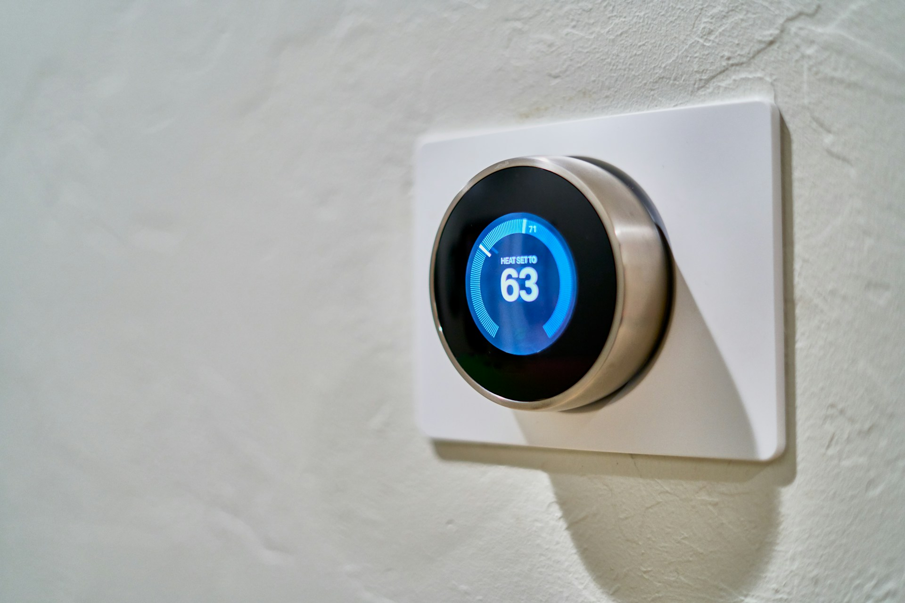

While homes may not pollute as much as corporations do, there are many things you can do to make your home a more eco friendly house. It is important to make a change wherever possible after all, and your home is something you have control over - so why not make the change? Here is a list of things you can do, from home improvements that require significant up-front capital to small, easy changes that can have a big impact. Smart home technology is becoming more affordable. You don’t need to break the bank to modernize your home. For those on a budget, affordable smart home solutions in Qatar are available without compromising quality.
Renewable Energy for Electricity
Solar photovoltaic (PV) installations convert the sun's energy into electricity using photovoltaic cells or solar panels. This allows you to generate your own reliable, sustainable and low-maintenance source of energy. Once installed, they don’t release any emissions into their lives, and they don’t produce any noise or air pollution. This can greatly improve local air quality, which has respiratory health benefits. Solar PV can also be combined with electric heating systems, such as air source heat pumps, to run your heating and hot water entirely from renewable sources.
An image of solar panels Smart Thermostats
A smart thermostat is a home efficiency solution that is more easily implemented in the short term. These wifi-enabled features can be remote-controlled from any smart device. They can be connected to your central heating, boilers, and air conditioning systems.This ever-evolving technology remembers your home’s heating patterns and knows when to heat or cool down your home based on outside temperatures. They use presence-sensing technology that automatically switches off your system when you leave the house and fires it up in time for you to come home. This is useful in reducing energy demand from fossil-fuelled power plants, which has great cost benefits for your energy bills.
An image of a smart thermostat Air sealing and insulation
Sealing and insulating is often the most cost effective way to improve efficiency and comfort. Insulation can conserve energy and save money in monthly heating and cooling bills. Insulation can also improve the health and comfort of building occupants. Sealing air leaks around your home and adding insulation can help your home be more comfortable and energy efficient and provide up to a 10% savings on your annual energy bills. Simple fixes include installing weather stripping on doors and caulking (seal a gap with caulk, a waterproof filler and sealant) used in building work and repairs around windows, while bigger jobs might include sealing leaks and adding insulation in your attic. Open gaps and seams, called air leaks, allow cold or warm air from outside to enter your home through window frames, exterior doors, uninsulated rim joists, your attic, and more. Air sealing fixes this issue. Along with insulation, air sealing is one of the most important things you can do to improve your home’s comfort, health, and energy efficiency, yet it’s often overlooked by many homeowners and even some contractors. Air sealing is the process of locating - and then sealing - all the nooks, crannies, gaps, and open seams throughout your home. A professionally-sealed home will have well-regulated air flow - it’ll be less stuffy in summer and less drafty in winter. Air sealing can also improve your home’s overall air quality, reduce humidity in your house, increase the health and comfort of your home, reduce the energy used by your heating and cooling equipment and lower your energy bills.
An image of an attic insulated with polyurethane foam. Duct sealing
In houses with forced-air heating and cooling systems, ducts are used to distribute conditioned air throughout the house. In a typical house, however, about 20 to 30 percent of the air that moves through the duct system is lost due to leaks, holes, and poorly connected ducts. The result is higher utility bills and difficulty keeping the house comfortable, no matter how the thermostat is set.
How do you know that your home has poorly performing ducts?
You have high summer and winter utility bills.
You have rooms that are difficult to heat and cool.
You have stuffy rooms that never seem to feel comfortable.
Your ducts are located in an attic, crawlspace, or the garage.
You find tangled or kinked flexible ducts in your system.
A duct system that is well-designed and properly sealed can make your home more comfortable, energy efficient, and safer. Here is a list of the benefits of duct sealing:
Comfort: Sealing and insulating ducts can help with common comfort problems, such as rooms that are too hot in the summer or too cold in the winter.
Indoor air quality: Fumes from household and garden chemicals, insulation particles, and dust can enter your duct system. Sealing ducts can help improve the indoor air quality by reducing the risk of pollutants entering these ducts from dusty attics or musty crawlspaces and circulating through your home. Dust from insulation particles or smells from damp spaces could aggravate asthma and allergy problems.
Safety: During normal operation, gas appliances such as water heaters, clothes dryers, and furnaces release combustion gases (like carbon monoxide) through their ventilation systems. Leaky ductwork in your heating and cooling system may cause “backdrafting,” where these gases are drawn back into the living space, rather than expelled to the outdoors. Sealing leaks can minimize this risk.
Save money: Leaky ducts can reduce heating and cooling system efficiency by as much as 20 percent. Sealing and insulating ducts increases efficiency, lowers your energy bills, and can often pay for itself in energy savings. Plus, if you’re planning to install new heating and cooling equipment, a well-designed and sealed duct system may allow you to downsize to a smaller, less costly heating and cooling system that will provide better dehumidification.
Protect the environment: Energy used in our homes often comes from the burning of fossil fuels at power plants, which contributes to smog, acid rain, and climate change. Simply put, the less energy we use in our homes, the less air pollution we generate. By sealing your ducts and reducing the amount of energy necessary to comfortably heat or cool your home, you can reduce the amount of air pollution generated.
Peace of Mind: The less energy you use in your home, the less air pollution is produced. By sealing your ducts and reducing the amount of energy necessary to comfortably heat or cool your home, you can have the peace of mind that you’ve done the right thing for your family, home, and for the planet.